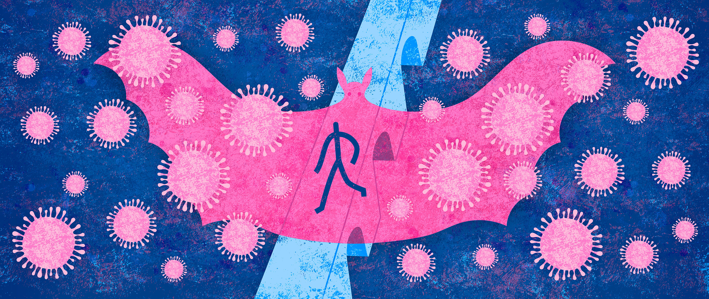

Covid-19 Origin
Evolution of Covid-19
The novel coronavirus disease 2019 (COVID-19) has caused havoc across the globe. United, the world is fighting against the pandemic since its first outbreak in Wuhan, China in December 2019. Possible animal sources of COVID-19 have not yet been confirmed. But did you know coronaviruses are not the new viruses. They have a history of about 9 decades since its evolution first came into existence. Coronaviruses were first discovered in the 1930s with an acute respiratory infection in domesticated chickens. These are well-established pathogens of humans and animals from the virus family Coronaviridae. Human coronaviruses were discovered in the 1960s.
 Coronavirus disease 2019 (COVID-19) is a contagious disease caused by severe acute respiratory syndrome coronavirus 2 (SARS-CoV-2). The first known case was identified in Wuhan, China in December of 2019. The disease has since spread worldwide, leading to an ongoing pandemic . Leaving political speculations aside from real science, several lines of evidence garnered since the beginning of this pandemic now allow to credibly pinpoint that SARS-CoV-2 has a “zoonotic” animal origin, a conclusion supported by a deep analysis of the genome and evolutionary history of this virus. A bat is indeed the original source of SARS-CoV-2, as well as of many other life-threatening viruses such as Ebola, rabies, Influenza A and so forth. A phylogenetic analysis with structural modeling of spike protein has revealed that this moiety has a 97% sequence identity with that of another bat coronavirus (i.e., BatCov-RaTG13), and also shares a 97% sequence identity in the RBD with a pangolin coronavirus [i.e., 2019 Guandong (GD) Pangolin] . This may suggest that SARS-CoV-2 has probably originated from recombination of these two animal coronaviruses in an intermediate host (e.g., pangolin?), and has then infected humans as a consequence of spillover. Notably, SARS-CoV-2 also shares 76% structural homology with SARS-CoV-1, the virus which caused the SARS outbreak nearly 20 years ago. However, the structural homology between these two viruses in the RBD is limited, lower than 50%, which would perhaps explain the different biological and clinical features between SARS and COVID-19. One of the most intriguing aspects in SARS-CoV-2 biology, is why this and the two previous similar coronaviruses that caused SARS and MERS display such high virulence and pathogenicity compared to other coronaviruses which only cause a common cold. A possible explanation has been given in the seminal work of Gussow et al., in which it was demonstrated that these three coronaviruses have undergone a convergent trend in their evolution, characterized by enhancement of nuclear localization signal in their N protein, which contributes to modify their subcellular localization, combined with important insertions in the spike protein, which may ultimately facilitate and amplify their binding to host cell receptors.
Coronavirus disease 2019 (COVID-19) is a contagious disease caused by severe acute respiratory syndrome coronavirus 2 (SARS-CoV-2). The first known case was identified in Wuhan, China in December of 2019. The disease has since spread worldwide, leading to an ongoing pandemic . Leaving political speculations aside from real science, several lines of evidence garnered since the beginning of this pandemic now allow to credibly pinpoint that SARS-CoV-2 has a “zoonotic” animal origin, a conclusion supported by a deep analysis of the genome and evolutionary history of this virus. A bat is indeed the original source of SARS-CoV-2, as well as of many other life-threatening viruses such as Ebola, rabies, Influenza A and so forth. A phylogenetic analysis with structural modeling of spike protein has revealed that this moiety has a 97% sequence identity with that of another bat coronavirus (i.e., BatCov-RaTG13), and also shares a 97% sequence identity in the RBD with a pangolin coronavirus [i.e., 2019 Guandong (GD) Pangolin] . This may suggest that SARS-CoV-2 has probably originated from recombination of these two animal coronaviruses in an intermediate host (e.g., pangolin?), and has then infected humans as a consequence of spillover. Notably, SARS-CoV-2 also shares 76% structural homology with SARS-CoV-1, the virus which caused the SARS outbreak nearly 20 years ago. However, the structural homology between these two viruses in the RBD is limited, lower than 50%, which would perhaps explain the different biological and clinical features between SARS and COVID-19. One of the most intriguing aspects in SARS-CoV-2 biology, is why this and the two previous similar coronaviruses that caused SARS and MERS display such high virulence and pathogenicity compared to other coronaviruses which only cause a common cold. A possible explanation has been given in the seminal work of Gussow et al., in which it was demonstrated that these three coronaviruses have undergone a convergent trend in their evolution, characterized by enhancement of nuclear localization signal in their N protein, which contributes to modify their subcellular localization, combined with important insertions in the spike protein, which may ultimately facilitate and amplify their binding to host cell receptors.
 Another intriguing aspect in SARS-CoV-2 biology is that this virus undergoes considerable intra- and inter-human recombination. There is little doubt that SARS-CoV-2 has undergone many mutations since its first appearance in China and will continue to do so while it remains among us. This is not surprising since viruses which directly encode their genome in RNA, including HIV and influenza along with SARS-CoV-2, seems to insert mutations in their RNA rapidly. This occurs because these microorganisms reproduce inside their hosts, where enzymes copying RNA are more vulnerable to errors . A comprehensive description of SARS-CoV-2 phylogeny is available on the website of the Global Initiative on Sharing All Influenza Data (GISAID), which lists the huge complexity of the recombinant events that the virus has undergone thus far (a temporal resolution analysis is consistent with nucleotide replacement rate of around 8×104 yearly subs per site, giving rise to as many as 4,771 genomes sampled to date) . Interestingly, a study published by Tiwari and Mishra concluded that nonsynonymous substitutions generated not less than 57 amino acid changes distributed over different viral proteins, with maximum genetic variation observed in the region encoding for the spike protein, which may then be reflected by import structural and functional heterogeneity when the spike protein interacts with host cell receptors . The leading source of these mutations is hence human recombination. In the interesting study of Shen and colleagues, the median number of intra-host SARS-CoV-2 variants was found to range between 1 and 4 in infected patients, but cumulatively spanning over a very vast array, between 0 and 51 . Rather understandably, this intra-individual recombination process may have considerable impacts on virulence, infectivity, pathogenicity and transmissibility of the virus.
Another intriguing aspect in SARS-CoV-2 biology is that this virus undergoes considerable intra- and inter-human recombination. There is little doubt that SARS-CoV-2 has undergone many mutations since its first appearance in China and will continue to do so while it remains among us. This is not surprising since viruses which directly encode their genome in RNA, including HIV and influenza along with SARS-CoV-2, seems to insert mutations in their RNA rapidly. This occurs because these microorganisms reproduce inside their hosts, where enzymes copying RNA are more vulnerable to errors . A comprehensive description of SARS-CoV-2 phylogeny is available on the website of the Global Initiative on Sharing All Influenza Data (GISAID), which lists the huge complexity of the recombinant events that the virus has undergone thus far (a temporal resolution analysis is consistent with nucleotide replacement rate of around 8×104 yearly subs per site, giving rise to as many as 4,771 genomes sampled to date) . Interestingly, a study published by Tiwari and Mishra concluded that nonsynonymous substitutions generated not less than 57 amino acid changes distributed over different viral proteins, with maximum genetic variation observed in the region encoding for the spike protein, which may then be reflected by import structural and functional heterogeneity when the spike protein interacts with host cell receptors . The leading source of these mutations is hence human recombination. In the interesting study of Shen and colleagues, the median number of intra-host SARS-CoV-2 variants was found to range between 1 and 4 in infected patients, but cumulatively spanning over a very vast array, between 0 and 51 . Rather understandably, this intra-individual recombination process may have considerable impacts on virulence, infectivity, pathogenicity and transmissibility of the virus.
Conspiracy theories: Lab-Leak or Nature?
 Controversy is once again swirling around the origins of the coronavirus behind the COVID-19 pandemic, rekindling calls to pin down just where it came from: nature or a lab.
Conspiracy theories on the origin and spread of COVID-19 have ranged from the virus being a lab-designed bioweapon or 5G cell phone towers which accelerate the spread of the virus or a meteor which carried the virus to planet Earth when it struck northeastern China in October . Such theories have also been rapidly spread around the world via social media. Nonetheless, the current biological evidence would lead us to generate a possible theory on the origin and spillover of SARS-CoV-2 . Briefly, WHO states that the virus has likely originated from a bat coronavirus, probably BatCoV-RaTG13, which has been transmitted to another intermediate animal, maybe a pangolin, where the ancestral virus has undergone primary intra-animal recombination. This new virus (e.g., 2019 GX/GD Pangolin) was likely then transmitted to the first human index case, where it then became the SARS-CoV-2 that originated in the first local outbreak. Failure to timely recognize the first diffusion of the virus within a likely circumscribed human niche has enabled further intra-human recombination processes, which then finally generated the highly virulent pathogen that is causing the ongoing pandemic outbreak. This theory is inherently supported by data showing that the virus has circulated at lower virulence much earlier before its first identification in Wuhan. For example, evidence from environmental monitoring suggests that the virus started to circulate in Italy as early as December 2019, while the much larger outbreak was only recorded 2–3 months later .
Controversy is once again swirling around the origins of the coronavirus behind the COVID-19 pandemic, rekindling calls to pin down just where it came from: nature or a lab.
Conspiracy theories on the origin and spread of COVID-19 have ranged from the virus being a lab-designed bioweapon or 5G cell phone towers which accelerate the spread of the virus or a meteor which carried the virus to planet Earth when it struck northeastern China in October . Such theories have also been rapidly spread around the world via social media. Nonetheless, the current biological evidence would lead us to generate a possible theory on the origin and spillover of SARS-CoV-2 . Briefly, WHO states that the virus has likely originated from a bat coronavirus, probably BatCoV-RaTG13, which has been transmitted to another intermediate animal, maybe a pangolin, where the ancestral virus has undergone primary intra-animal recombination. This new virus (e.g., 2019 GX/GD Pangolin) was likely then transmitted to the first human index case, where it then became the SARS-CoV-2 that originated in the first local outbreak. Failure to timely recognize the first diffusion of the virus within a likely circumscribed human niche has enabled further intra-human recombination processes, which then finally generated the highly virulent pathogen that is causing the ongoing pandemic outbreak. This theory is inherently supported by data showing that the virus has circulated at lower virulence much earlier before its first identification in Wuhan. For example, evidence from environmental monitoring suggests that the virus started to circulate in Italy as early as December 2019, while the much larger outbreak was only recorded 2–3 months later .
COVID-19 has been a great lesson to mankind across the globe in practicing personal hygiene and keeping the surroundings clean. Till date, there is no fixed treatment for this dreadful virus. Social distancing and few simple safety precautions are being followed. Further on safety measures to be taken during pandemic, read this space in our blog. Read here>